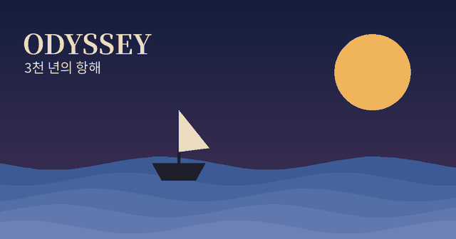

놀란의 '오디세이', 3천 년 된 이야기를 왜 지금 IMAX로 찍었나

크리스토퍼 놀란이 호메로스의 『오디세이아』를 IMAX 필름으로 찍는다는 소식을 처음 들었을 때, 나는 조금 이상한 지점에서 마음이 움직였다. 왜 하필 귀향 이야기일까. 신화 중에는 더 화려한 모험도, 더 극적인 파국도 많은데, 놀란은 굳이 '집으로 돌아가는' 이야기를 골랐다. 나는 이게 우연이 아니라고 생각한다.

오디세우스는 왜 20년이 걸렸나
『오디세이아』의 오디세우스는 트로이 전쟁이 끝난 뒤 10년, 바다를 떠도는 데 또 10년을 쓴다. 신들은 끊임없이 그의 귀향을 늦춘다. 나는 이 지연 자체가 이야기의 핵심이라고 생각한다. 만약 오디세우스가 곧장 집으로 돌아갔다면 그는 그저 전쟁에서 살아 돌아온 병사에 불과했을 것이다. 20년의 지연을 통과하고서야 그는 이타카의 왕이자 남편이자 아버지로 '다시' 인정받을 자격을 얻는다. 그리스인들에게 정체성이란 처음부터 주어진 것이 아니라, 시련을 통과하며 매번 증명해야 하는 무엇이었던 셈이다.
같은 사람으로 돌아간다는 것
여기서 나는 철학자 폴 리쾨르가 말한 '서사적 정체성'을 떠올리게 된다. 리쾨르는 우리가 스스로를 안다는 것은 변하지 않는 본질을 발견하는 일이 아니라, 시간 속에서 벌어진 사건들을 하나의 이야기로 엮어내는 행위에 가깝다고 보았다. 오디세우스가 20년 만에 이타카에 돌아왔을 때, 그를 알아보는 사람은 거의 없다. 늙은 유모가 그의 흉터를 보고서야, 그리고 아내 페넬로페가 부부만이 아는 침대의 비밀을 확인하고서야 그는 비로소 '오디세우스'로 다시 인정된다. 나는 이 장면이 정체성이란 몸이나 이름이 아니라, 공유된 기억과 이야기 속에서 확인되는 것이라는 사실을 정확히 보여준다고 생각한다.
놀란의 시간, 호메로스의 시간
놀란의 필모그래피를 돌이켜 보면 그는 한 번도 시간을 순순히 흘러가게 둔 적이 없다. 『메멘토』는 거꾸로, 『덩케르크』는 세 겹으로, 『테넷』은 역행하는 시간으로 이야기를 짰다. 흥미로운 건 호메로스 역시 『오디세이아』를 시간 순서대로 서술하지 않았다는 점이다. 이야기는 오디세우스가 떠난 지 한참 뒤, 귀향의 막바지에서 시작해 중간에 회상으로 지난 모험을 풀어놓는다. 나는 놀란이 이 원작의 비선형적 구조에서 오히려 자기 자신과 가장 가까운 재료를 발견했으리라 짐작한다. 3천 년 전의 서사시가 이미 '현재에서 과거를 재구성하는' 이야기였다는 사실은, 왜 이 조합이 낯설지 않은지를 설명해 준다.
돌아갈 곳이 있다는 특권
콘스탄티노스 카바피스의 시 「이타카」는 오디세우스에게 말을 건네며, 정작 중요한 것은 이타카에 도착하는 순간이 아니라 그곳을 향해 나아가는 여정 그 자체라고 노래한다. 나는 이 관점이 현대인에게 더 절실하게 와닿는다고 생각한다. 오늘날 우리 대부분은 오디세우스처럼 괴물과 싸우지 않지만, '내가 지금 어디로 돌아가고 있는가'라는 질문 앞에서는 크게 다르지 않은 표류를 겪는다. 커리어, 관계, 신념 — 우리는 저마다의 이타카를 향해 방향을 잃었다가 되찾기를 반복한다. 신화가 여전히 힘을 갖는 이유는, 그것이 특정 시대의 이야기가 아니라 인간이 반복하는 구조 자체를 담고 있기 때문일 것이다.
극장에서 확인하고 싶은 것
나는 이 영화를 보기 전부터 던지고 싶은 질문이 하나 있다. 놀란은 오디세우스의 귀향을 순수한 승리로 그릴 것인가, 아니면 그 20년이 그에게서 무엇을 앗아갔는지도 함께 보여줄 것인가. 원작의 오디세우스는 영웅이면서 동시에 거짓말쟁이이고, 잔인하기도 한 인물이다. 그 복잡함을 얼마나 남겨두느냐에 따라 이 영화가 단순한 스펙터클에 머물지, 아니면 시간과 정체성에 대한 진지한 질문으로 남을지가 갈릴 것이다.
← 목록으로